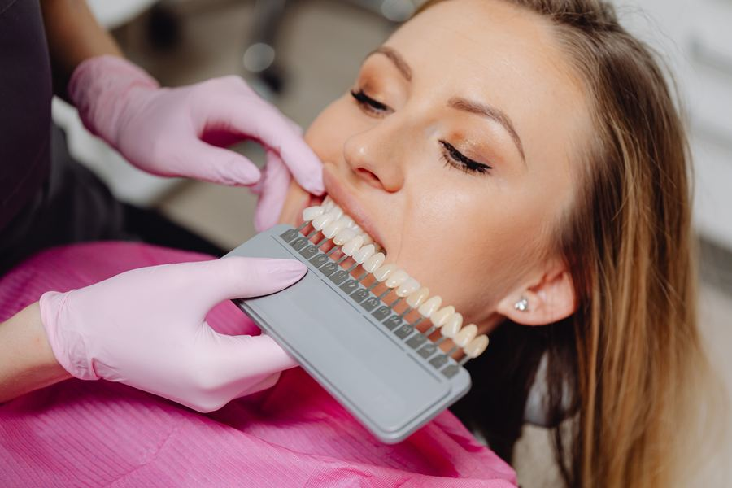

A slim, tooth-colored fix for a wide range of smile issues
A dental veneer is a slender, tooth-shaped piece of porcelain that adheres to the outward-facing side of your tooth to enhance its shape and appearance. Veneers are an excellent tool for covering chips, cracks, and uneven spacing, as well as natural tooth defects. Your smile can look straighter and brighter without braces or bleaching.
- ✓ Chipped, cracked, or broken teeth
- ✓ Discolored or stained teeth
- ✓ Crooked or oddly shaped teeth
- ✓ Gaps between teeth
The advantages of porcelain veneers
The durable porcelain material that makes up our veneers is an excellent match to the color and shine of your other teeth. People who look at your smile won't be able to tell which teeth have had work done and which are all-natural. Your new, healthier-looking smile will radiate confidence and inspire it in others.
Veneers are easy to maintain and cause no mouth discomfort. For a straighter, brighter smile, they just make sense. Our service area encompasses Brigham City, Willard, and Tremonton, UT, as well as surrounding communities. If that describes you and you'd like to learn more about veneers or set up an appointment, contact our office today.